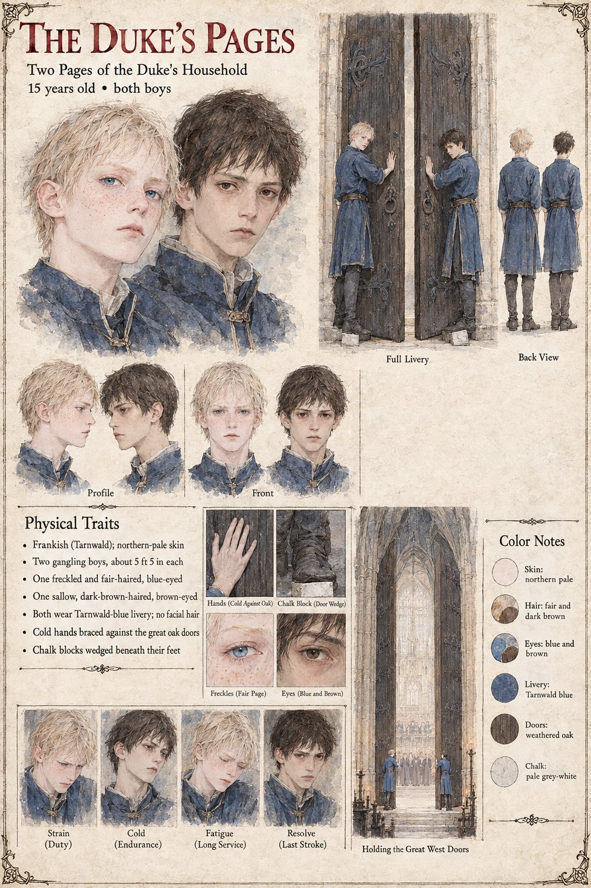

The Duke's Pages
Two pages of the Duke of Tarnwald's household · unnamed · boys of 15
Two boys of fifteen in Tarnwald blue who stand on either side of the great west doors of the cathedral through the whole of the Ordeal. The Chancellor Ricbert has found that it is not possible to seat the Duke of Tarnwald anywhere with a door within a hundred paces of it, and has concluded that the doors, oak bound in bronze, twice the height of a man and shut upon every proceeding of the Law since the foundation, will stand open. So the two pages hold them back with their hands from Prime to the last stroke, with a great square block of chalk apiece wedged under the foot, for fear that a draught should remember its duty. The Duke himself stands in the porch behind them, in a plain grey cloak and without a sword; the cathedral's Sacristan records that he never took his eyes from the open door. When the Third Stroke is struck on the crossed blades, the two pages, who can see the whole length of the nave in miniature between their own elbows, feel their hands go cold against the oak.
The manuscript gives them an office, an age and a door. The sheet's two gangling boys of about 5 ft 5 in each, northern-pale, one freckled, fair-haired and blue-eyed and the other sallow, dark-brown-haired and brown-eyed, are its own, as are the beardless faces and the chalk-block detail; its panel is Holding the Great West Doors, and its expression panels run Strain, Cold, Fatigue and Resolve.
“for fear that a draught should remember its duty”
Appears In

Related Subjects


Related Records

Over the black oak Altar of Oaths Theodard of Lorrenne, the Duke's champion, and Ebbo of Eschwin, the Countess's, cross blades flat to flat through thirteen strokes while Rothari holds the Book of the Law open at arm's length; Adalgund stands at the altar steps, Ansbert by the north pillar in his blue sash, and far down the nave, in the porch between the two pages who hold the west doors open, the Duke never takes his eyes from the doorway.